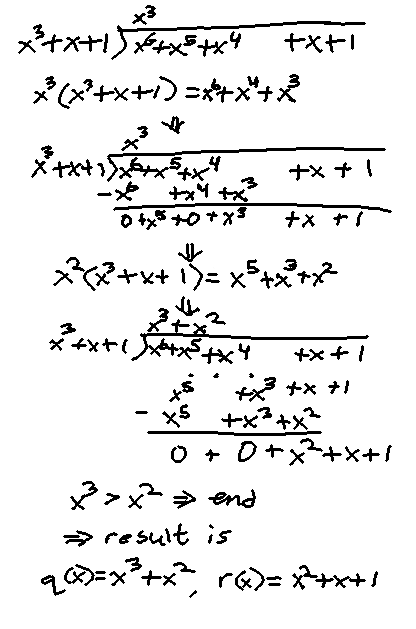
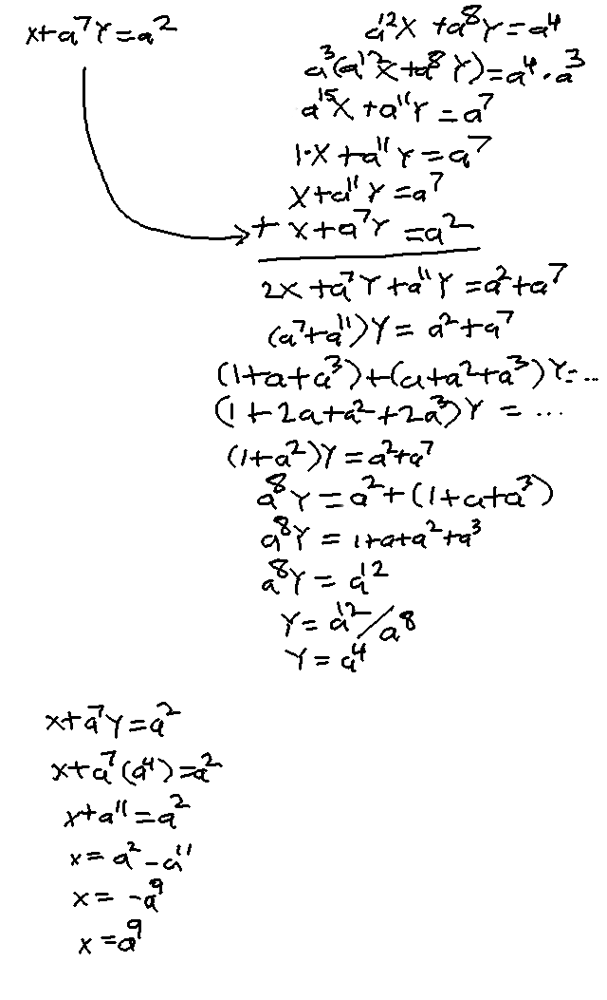
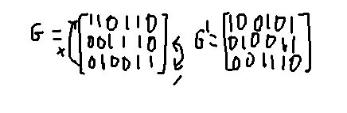

Where all addition/multiplication is done Modulo 2
Division - Euclid's division algorithm
given g(X) is NOT 0, f(X)/g(X) = q(X)g(X)+r(X), where q(X) is the quotient and r(X) is the remainder
Example: f(X) = 1 + X + X4 + X5 + X6, g(X) = 1 + X + X3
Notice all the would be negative coefficients turn into positives,
since in GF(2) 1 = -1, since additive inverse means a + (-a) = 0, so 1 + (-1) = 0 --> 1 + 1 = 0
Properties of Binary Field Polynomials
If a is a root of f(X) (f(a)=0), then f(X) is divisible by X-a
If the polynomial has an even number of terms, it is divisible by X+1
Irreducible: for f(X) of degree m, f(X) is irreducible if it isn't divisible
by any g(X) of degree less than m and greater than 0.
Any irreducible f(X) of degree m evenly divides X2m-1 + 1
Primitive: an irreducible f(X) is primitive if X2m-1+1 is the
smallest polynomial it divides evenly
f(X)2i = f(X2i) for i >= 0
Galois Field GF(2m)
Field over GF(2) with 2m elements as opposed to just 0 and 1
Field F = {0,1,a,a2,a3,...}
with 2m elements (F finite = {0,1,a,a1,
...a2m-2})
Addition, subtraction, multiplication done Modulo 2 - Notably, when using a:
ai(X) = ai,0 + ... ai,m-1Xm-1
is the remainder from dividing Xi by p(X)
p(X) is primitive with degree m over GF(2), where p(a) = 0
(a is a root of p(X))
a2m-1 = 1 using modulo 2 addition
Similarly, a2m+i
loops back around starting at a0=1
e.g. a16=a, a17=a2,
a18=a3, etc.
Example using a within F finite (also denoted F*)
m=4, p(X) = 1+X+X4
Since a must be a root of p(X),
p(a)=1+a+a4 = 0
1+a = a4 (using mod 2 arith (1 = -1))
Use this identity to form the rest of F*
a5=a*a4=a(1+a)=a+a2
a6=a*a*a4=a2*(1+a)=a2+a3
...
a15 = 1 (last property above (24-1 = 15))
So F* = {0,1,a,a2,a3,a4,
(a+a2),(a2+a3),...}
The ai representation makes multiplication easier
a5*a7=a12
a12*a7=a19=
a15*a4=1*a4=a4
The polynomial representation makes addition easier
a5+a7=(a+a2)+(1+a+a3)=1+(1+1)a+a2+a3
=1+a2+a3=a13
Binary representation makes addition yet again even easier
Each bit represents a coefficient in the polynomial, e.g. (1011)
= 1+a2+a3
Given A=1+a2+a3=(1011), B=1+a2=(1010),
A+B = (a0+b0)(a1+b1)...
(a3+b3)
=(1+1)(0+0)(1+1)(1+0)=(0001)=a3
Can be done as a single XOR in C: A^B = (1011)^(1010)=0001
Properties of GF(2m)
A polynomial without real roots in GF(2) can have roots in GF(2m)
Ex: X4+X3+1 has no roots in GF(2)
Plugging in elements from the example GF(24)
f(X)=X4+X3+1, X=a7
(a7)4+(a7)3+1
a28+a21+1
a13+a6+1
(1+a2+a3)+(a2+a3) + 1
(1101) + (1100) + 1 = (0001) + 1 = 0
Hence a7 is a root of f(X). The same can be found for
a11,a13, and a14
Conjugate of a polynomial root
If B is a polynomial in GF(2m) and is a root
of a polynomial f(X) in GF(2), then B2l
is also a root of f(X) for any l >=0
B2l is a conjugate of B
Minimal polynomial of B
ϕ(X) is the polynomial of the smallest degree where B
is a root (ϕ(B)=0), ϕ(X) is in GF(2)
and B is in GF(2m)
Example: the minimum polynomial ϕ(X) for B=0 is
ϕ(X)=X (since ϕ(B)=0)
Example: ϕ(X) for B=1 is
ϕ(X)=1+X (since ϕ(B)=1+1=0)
Finding the Minimal Polynomial of B
ϕ(X) = (X+B20) *
(X+B21) * ...
(X+B2e-1)
Where e is the smallest number so that
B2e=B
Example: B=a3 in GF(24)
B2=(a3)2=a6
B4=(a3)4=a12
B8=(a3)8=a24=a9
ϕ(X) = (X+a3) *
(X+a6) *
(X+a12) *
(X+a24)
which simplifies to ϕ(X) = X4 + X3 + X2 + X + 1
Example Computations Using GF(2m)
Solve the linear equations
X+a7Y = a2 and
a12X + a8Y = a4
over GF(24)

Many of the substitutions come from the GF(24)
element table using the polynomial representations. Also again remember
a = -a because of the additive inverse in mod 2
We can also use Cramer's rule to solve the set of equations (see section 2.6)
Find the roots of the equation f(X) = X3 + a7X + a
Can't use quadratic equation because of the divide by 2, and in GF(2), 2=(1+1)=0
Instead, plug in and try all of the power representations ai
for X and see which ones are roots (f(X) = 0)
f(a6) = (a6)2 + (a7)(a6) +
a = a12 + a13 + a = 0
f(a10) = (a10)2 + (a7)(a10) +
a = a5 + a2 + a = 0
The above two previous examples are used in BCH and Reed-Solomon coding
Vector Spaces
Vector space over GF(2)
n-tuple over GF(2): (a0,a1,a2,a3...an-1)
where a0...an-1 are in GF(2) (equal 0 or 1)
Vn = the set of all possible n-tuples (2n possible tuples)
for n-tuples u and v,
u + v = (u0 + v0, u1 + v1, ...)
Where addition is Modulo 2
v+v=0 (since 1+1=0)
The additive inverse of v (-v) is v itself
Scalar multiplication: a*v = (a*v0,a*v1,...)
Multiplication is Modulo 2
Linear combination: a1v1 + a2v2 + ... akvk
a1...k and v1...k are k scalars and vectors from vector space V and field F
Matrices
A k by n matrix G over GF(2) has k rows and n columns, where
each entry is in GF(2) (0 or 1)
Matrix can also be represented by its k rows, where each row is a n-tuple vector
Row space: If the k rows (assuming k <= n) are linearly independant, then any linear
combination of these rows called the row space of G
Elementary row operations:
Adding or swapping any of these rows is valid and is called a elementary row operation

Example: adding row 3 to the first row and swapping rows 2 and 3
Adding matrices:
The number of rows and cols must be the same
Uses scalar addition: A+B=C, where Ci,j = Ai,j+Bi,j
Multiplying matrices:
Number of cols in A must equal the number of rows in B
Each entry in result is the dot product/inner product of the row in A and col in B